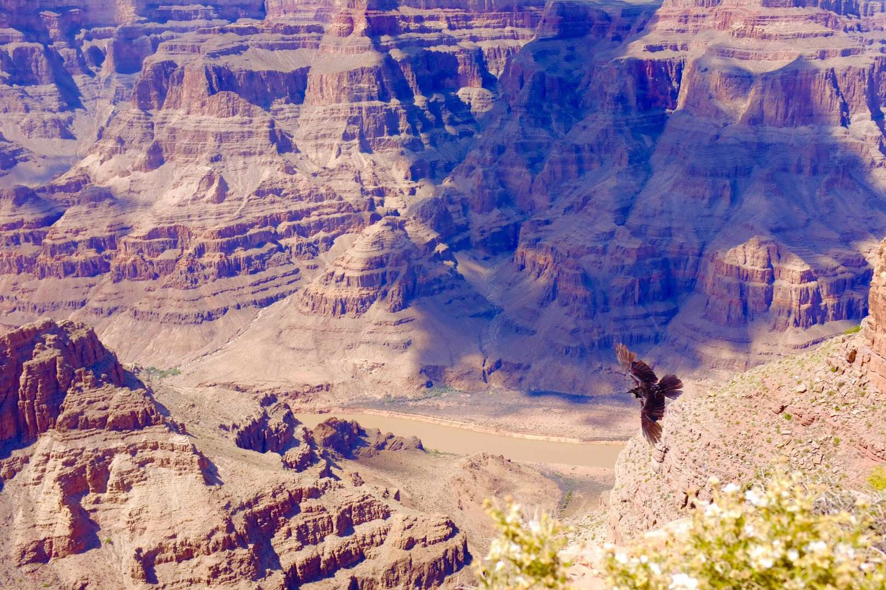

Features intro:
If you can’t bear to forget that trip abroad or even a weekend adventure, consider creating an account or log in to Expat Journal - A simple, fun & creative way to edit & share photos & stories with friends & family.

Store & Share your stories Record your adventures Journal your adventures
If you can’t bear to forget that trip abroad or even a weekend adventure, consider creating an account or log in to Expat Journal - A simple, fun & creative way to edit & share photos & stories with friends & family.


Keep Organized - Expat Journal brings all your travel memories together, in one central place. Creating an account is free and only takes a few clicks.
Upload your Adventures - Upload photos, document their location, and write the story that goes with it - never forget a moment again.
View Anywhere - You, your friends, or family can view your adventures on any device with no account needed.
Led by Erin - who lives on a street named after an exotic fruit, our decentralized team is spread over numerous time zones and three continents:
